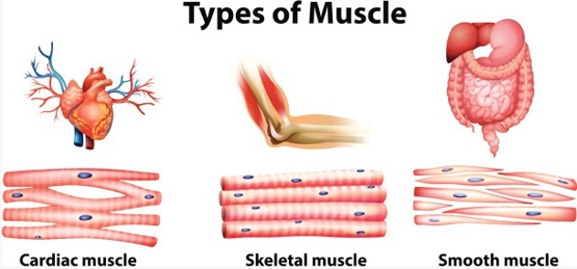
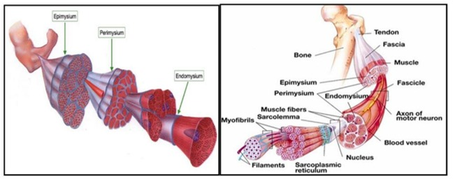
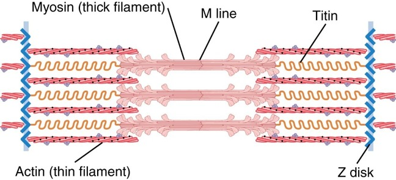
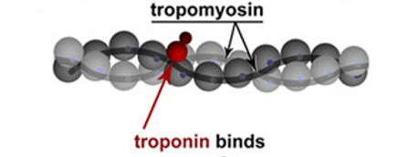
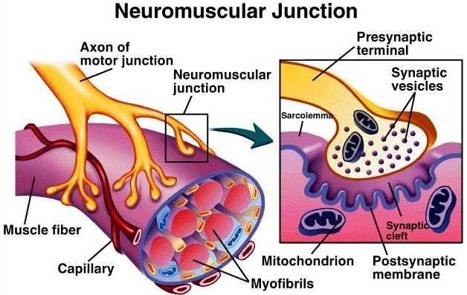
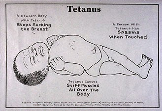
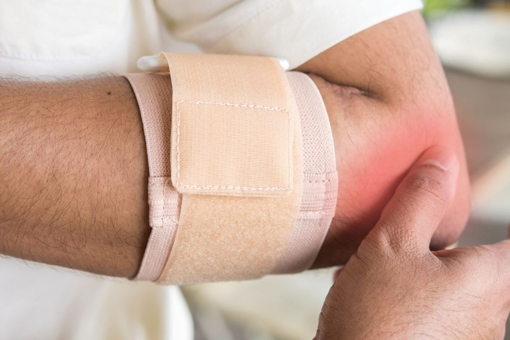

Gambar 2.1 Anatomi Sistem Otot (Sumber: Deposit Photos)
🗺️ PETA PEMBELAJARAN
Buka materi secara bertahap dengan mengklik tombol di bawah ini
🦴 Anatomi Makroskopis Otot Rangka
Sistem muskular adalah alat gerak aktif: kontraksi otot menarik tulang melalui tendon, sedangkan tulang merupakan alat gerak pasif. Sistem ini menghasilkan gerak, mempertahankan postur, menstabilkan sendi, menghasilkan panas, dan menyimpan glikogen. Tubuh memiliki lebih dari 600 otot yang menyusun sekitar 40-50% berat tubuh. Aktivitasnya berhubungan erat dengan sistem saraf (Ginting et al., 2022; Putra et al., 2022).
Berdasarkan struktur dan cara kerjanya, otot dibagi menjadi tiga jenis utama:

Gambar 2.3 Jenis-Jenis Otot (Sumber: Ginting et al., 2022)
Otot Rangka (Otot Lurik): Melekat pada tulang, bekerja secara teratur di bawah kesadaran (volunter). Berfungsi menghasilkan gerakan tubuh, mempertahankan postur, dan stabilitas sendi. Memiliki sifat kontraktilitas, eksitabilitas, konduktivitas, ekstensibilitas, dan elastisitas.
Otot Polos: Terdapat pada dinding organ dalam berongga seperti saluran pencernaan, pembuluh darah, dan usus. Bekerja secara tidak sadar (involunter) tanpa garis-garis melintang.
Otot Jantung: Hanya terdapat di dinding jantung, bekerja secara involunter (otonom) dan ritmis untuk memompa darah ke seluruh tubuh.
Otot rangka dibungkus oleh beberapa lapisan jaringan ikat penyokong dari luar ke dalam:
Gambar 2.2 Letak Ligamen dan Tendon

Gambar 2.5 Lapisan Pembungkus Otot
Epimisium: Lapisan jaringan ikat paling luar yang membungkus seluruh fasikel dan massa otot. Memisahkan otot dari jaringan di sekitarnya serta mempertahankan bentuk otot.
Perimisium: Lapisan jaringan ikat yang membungkus setiap berkas sel/serat otot yang disebut fasikulus. Mengandung serabut saraf dan pembuluh darah.
Endomisium: Lapisan jaringan ikat paling dalam yang membungkus setiap individu serat/sel otot tepat di luar sarkolema.
Tendon: Pita jaringan ikat fibrosa padat yang menyatukan epimisium, perimisium, dan endomisium di ujung otot untuk melekat pada tulang.
• Origo: Ujung tendon yang melekat pada tulang diam/tetap saat kontraksi.
• Insersio: Ujung tendon yang melekat pada tulang yang bergerak saat kontraksi.
📑 Ciri Histologis Otot Rangka: Terdiri atas serat otot (muscle fiber) silindris panjang, tidak bercabang, multinukleat dengan inti di perifer (di bawah sarkolema). Menampilkan striasi berupa pita A gelap dan pita I terang.
🔬 Struktur Mikroskopis Serat Otot
Serat otot rangka berbentuk silindris panjang dengan miofibril memanjang yang menampilkan pita gelap dan terang. Sistem membrannya terdiri atas sarkolema, tubulus T, dan retikulum sarkoplasma; ketiganya penting untuk penghantaran rangsangan dan kontraksi (Wangko, 2014).
Gambar 2.6 Struktur Anatomi Mikroskopis Serat Otot
Sarkolema: Membran plasma yang membungkus sarkoplasma sel otot. Terdiri atas plasmalema dan membran basalis. Tempat pertama terjadinya depolarisasi listrik rangsangan saraf.
Tubulus T & Triad: Invaginasi sarkolema yang masuk mendalam menembus serat otot. Diapit oleh dua sisterna terminalis retikulum sarkoplasma membentuk Triad untuk menyalurkan potensial aksi secara cepat ke bagian dalam sel.
Retikulum Sarkoplasma: Sistem membran intraseluler halus yang berfungsi menyimpan, melepaskan, dan memompa kembali ion kalsium (Ca²⁺) yang mengatur siklus kontraksi-relaksasi.
Miofibril & Miofilamen: Elemen silindris kontraktil yang mengandung ratusan hingga ribuan susunan protein miofilamen (filamen tebal miosin, filamen tipis aktin, dan filamen elastis titin).
🧬 Struktur Molekul Sarkomer
Sarkomer adalah unit kontraktil terkecil yang membentang dari garis Z ke garis Z. Filamen tidak memendek; aktin dan miosin bergeser relatif sehingga garis Z mendekat, pita I serta zona H memendek, sedangkan pita A relatif tetap.

Gambar 2.7 Struktur Molekular Sarkomer

Gambar 2.8 Troponin & Tropomiosin
Gambar 2.9 Organisasi Sarkomer
Miosin (Filamen Tebal): Protein motorik dengan ekor memanjang dan kepala ganda yang memiliki aktivitas ATPase serta lokasi pengikatan untuk aktin.
Aktin (Filamen Tipis): Protein globular (G-aktin) yang membentuk rantai ganda heliks (F-aktin) sebagai tempat menempelnya kepala miosin saat kontraksi.
Titin (Filamen Elastis): Protein raksasa elastis yang membentang dari Garis Z ke Garis M untuk menjaga posisi miosin tetap di tengah dan memberikan gaya pegas pasif.
Troponin & Tropomiosin: Protein regulator. Tropomiosin menutupi situs aktif aktin saat relaksasi. Troponin C mengikat Ca²⁺ untuk menggeser tropomiosin agar situs aktif terbuka.
Garis Z & Garis M: Garis Z merupakan batas pembatas sarkomer tempat melekatnya aktin. Garis M berada di pusat sarkomer menahan posisi pertengahan miosin.
Pita A, Pita I & Zona H: Pita A = zona gelap filamen tebal (panjang tetap). Pita I = zona terang filamen tipis saja (memendek saat kontraksi). Zona H = pusat pita A tanpa tumpang tindih aktin (mengecil/hilang saat kontraksi).
⚡ Tautan Neuromuscular (NMJ) & Asetilkolin
Neuromuscular Junction (NMJ) adalah sinapsis kimia khusus yang menghubungkan terminal akson neuron motorik dengan membran serat otot (motor end plate) menggunakan neurotransmiter asetilkolin.
1. Struktur Anatomi NMJ
Terdiri dari 3 komponen utama penghantar impuls:

Gambar 2.11 Anatomi Neuromuscular Junction
Presynaptic Terminal: Ujung percabangan akson saraf motorik yang kaya mitokondria dan vesikel sinaptik berisi Asetilkolin (ACh).
Synaptic Cleft: Celah sempit (30-50 nm) berisi cairan & matriks ekstraseluler serta enzim Asetilkolinesterase (AChE).
End Plates: Lipatan junksional sarcolemma otot yang padat dengan reseptor asetilkolin nikotinik (AChR) dan kanal Na⁺ tergerbang tegangan.
2. Tahapan NMJ & Pelepasan Asetilkolin
Gambar 2.12 Mekanisme NMJ dan Pelepasan Asetilkolin
Potensial aksi tiba di terminal akson pra-sinapsis.
Kanal kalsium tergerbang tegangan terbuka, ion Ca²⁺ masuk ke dalam terminal saraf.
ACh berikatan dengan reseptor nikotinik di membran pelat ujung otot.
Kanal kation terbuka, ion Na⁺ melonjak masuk ke sel otot mendepolarisasi membran.
Terbentuk potensial pelat ujung (EPP) yang memicu potensial aksi melintasi sarkolema dan tubulus T.
Enzim Asetilkolinesterase (AChE) menguraikan ACh menjadi kolin dan asetat untuk menghentikan stimulasi.
🔄 Sliding Filament Theory (Teori Pergeseran Filamen)
Kontraksi otot terjadi karena pergeseran relatif antara filamen aktin dan miosin tanpa adanya perubahan panjang pada molekul filamen itu sendiri.
Gambar 2.14 Inisiasi Kontraksi Otot
Gambar 2.15 Tahapan Siklus Cross-Bridge
Impuls listrik merambat menembus tubulus T.
Retikulum sarkoplasma melepaskan ion Ca²⁺ melimpah ke sitosol.
Ca²⁺ berikatan dengan Troponin C, menggeser tropomiosin menyingkap situs aktif aktin.
Kepala miosin berenergi tinggi menempel pada situs aktif aktin membentuk jembatan silang (cross-bridge).
Miosin melepaskan ADP + Pi, mengayunkan kepalanya (Power Stroke) menarik aktin ke pusat sarkomer.
Molekul ATP baru menempel pada miosin sehingga kepala miosin terlepas dari aktin.
Perubahan Struktur Sarkomer saat Kontraksi:
Gambar 2.16 Sarkomer Saat Mengalami Kontraksi
Komponen
Perubahan
Keterangan
Garis Z
Bergerak Mendekat
Panjang Sarkomer Memendek
Pita I
Memendek
Area aktin murni menyempit
Zona H
Memendek / Hilang
Tumpang tindih filamen maksimal
Pita A
Relatif Tetap
Panjang miosin tidak berubah
🧪 Relaksasi Otot & Pompa Kalsium
Relaksasi otot terjadi ketika stimulasi impuls saraf berhenti. Ion Ca²⁺ dipompa kembali secara aktif ke dalam retikulum sarkoplasma menggunakan energi ATP, menghentikan siklus cross-bridge.
Gambar 2.17 Inisiasi Relaksasi Otot
Gambar 2.18 Siklus Kontraksi & Relaksasi Complete
Asetilkolin diuraikan AChE, sinyal listrik saraf berhenti.
Sarkolema dan tubulus T mengalami repolarisasi listrik.
Pompa kalsium SERCA (Ca²⁺-ATPase) memompa aktif Ca²⁺ dari sitosol masuk kembali ke retikulum sarkoplasma.
Konsentrasi Ca²⁺ sitosol anjlok, Ca²⁺ terlepas dari troponin.
Tropomiosin kembali menutup situs aktif aktin.
Interaksi aktin-miosin terhenti, tegangan otot hilang dan serat kembali ke panjang semula.
⚡ Sumber Energi Kontraksi Otot
ATP adalah sumber energi langsung untuk kayuhan miosin dan pompa SERCA. Karena simpanan ATP terbatas (hanya bertahan beberapa detik), otot memproduksi ATP melalui 3 jalur metabolisme (Barker et al., 2024).
Gambar 2.19 Metabolisme Energi Otot
Sistem Kreatin Fosfat: Reaksi tercepat tanpa oksigen. Enzim Kreatin Kinase memindahkan gugus fosfat dari kreatin fosfat ke ADP menjadi ATP. Menyediakan energi maksimal selama ~15 detik pertama (contoh: lari cepat/sprint).
Pemecahan Glukosa Tanpa Oksigen: Memecah glukosa/glikogen menjadi asam piruvat menghasilkan 2 ATP per molekul glukosa. Jika oksigen kurang, piruvat diubah menjadi asam laktat. Menopang aktivitas intensif selama ~1 menit.
Metabolisme Oksigen Mitokondria: Memecah glukosa, asam lemak, dan asam amino dalam mitokondria menghasilkan 32-36 ATP, H₂O, dan CO₂. Lambat namun sangat efisien, menyuplai 95% energi aktivitas tingkat sedang durasi panjang.
📈 Kedutan, Sumasi, Tetanus & Kelelahan Otot
Respons mekanis otot bervariasi dari kedutan tunggal hingga kontraksi tetanik konstan tergantung pada frekuensi potensial aksi yang diterima dari saraf motorik.
Gambar 2.20 Myogram Kedutan Otot (Single Twitch)
Gambar 2.21 Sumasi Gelombang & Tetanus
Respons mekanik tunggal terhadap 1 stimulus. Terdiri atas:
• Fase Laten: Waktu antara stimulus awal hingga timbul tegangan (pelepasan Ca²⁺).
• Fase Kontraksi: Peningkatan tegangan otot (cross-bridge active).
• Fase Relaksasi: Penurunan tegangan (reuptake Ca²⁺ oleh SERCA).
Terjadi jika stimulus kedua datang sebelum otot selesai relaksasi sempurna. Konsentrasi Ca²⁺ menumpuk sehingga tegangan kedua lebih tinggi dari yang pertama.
• Tetanus Tidak Sempurna (Unfused): Stimulasi frekuensi sedang, otot relaksasi sebagian gelombang bergerigi.
• Tetanus Sempurna (Fused): Stimulasi frekuensi tinggi, tidak ada relaksasi, gaya kontraksi halus maksimal konstan (3-5x lipat kedutan tunggal).
Penurunan kemampuan otot menghasilkan gaya akibat aktivitas berulang. Dipicu akumulasi Fosfat Anorganik (Pi), gangguan ion K⁺ di tubulus T, dan kelelahan saraf pusat (Central Drive).
⚠️ Kelainan Sistem Otot
Berbagai patologi dapat mengganggu homeostasis dan fungsi normal jaringan otot:
Gambar 2.23 Distrofi Otot Duchenne (DMD)
Kelainan genetik bawaan akibat kekurangan protein distrofin yang mengikat filamen aktin ke sarkolema. Memicu kelemahan dan penyusutan otot progresif.
Gambar 2.22 Miastenia Gravis
Penyakit autoimun di mana antibodi merusak reseptor asetilkolin (AChR) di NMJ, menyebabkan kelemahan otot cepat, ptosis kelopak mata, dan kesulitan menelan.

Gambar 2.24 Tetanus (Jaw Stiffness)
Penyakit saraf akibat racun neurotoksin bakteri Clostridium tetani yang memicu spasme dan kontraksi otot kejang hebat (rahang kaku/lockjaw).

Gambar 2.25 Tendinitis
Peradangan pada tendon akibat penggunaan berulang (overuse) atau mikrotrauma berulang (contoh: tennis elbow), menimbulkan rasa nyeri dan pembengkakan.
📌 SIMPULAN
Sistem muskular merupakan bagian penting dalam tubuh manusia yang berperan dalam menghasilkan gerakan, mempertahankan postur, menstabilkan tubuh, dan mendukung berbagai aktivitas fungsional. Otot rangka sebagai alat gerak aktif memiliki struktur terorganisasi dari tingkat makroskopis (epimisium, perimisium, endomisium, tendon) hingga molekuler (sarkomer, aktin, miosin). Kontraksi terjadi via sliding filament theory dipicu pelepasan ACh di NMJ dan lonjakan Ca²⁺. Energi disuplai oleh sistem fosfagen, glikolisis anaerob, dan respirasi aerobik.
💡 SARAN
Mahasiswa disarankan untuk lebih aktif mempelajari fisiologi otot secara runtut dari tingkat impuls saraf, molekuler, metabolisme energi, hingga aplikasi klinis kelainan otot menggunakan media visual interaktif dan pengamatan preparat mikroskopis.
📚 DAFTAR PUSTAKA
Referensi akademis yang digunakan dalam materi ini:
Arnold, W. D., & Clark, B. C. (2023). Neuromuscular Junction Transmission Failure in Aging and Sarcopenia: The Nexus of the Neurological and Muscular Systems. Ageing Research Reviews, 89, 1–22. https://doi.org/10.1016/j.arr.2023.101966
Badawi, Y., & Nishimune, H. (2020). Impairment Mechanisms and Intervention Approaches for Aged Human Neuromuscular Junctions. Frontiers in Molecular Neuroscience, 13, 1–16. https://doi.org/10.3389/fnmol.2020.568426
Barker, J., et al. (2024). TRU Human Anatomy & Physiology. Thompson Rivers University.
Fralish, Z., et al. (2021). Neuromuscular Development and Disease: Learning From in vitro and in vivo Models. Frontiers in Cell and Developmental Biology, 9, 1–35. https://doi.org/10.3389/fcell.2021.764732
Ginting, D. S., et al. (2022). Anatomi Fisiologi Tubuh Manusia. PT GLOBAL EKSEKUTIF TEKNOLOGI.
Gopalan, C. (2026). Essentials of physiology for nurse anesthetists.
Herzog, W. (2024). Sliding Filament Theory. Encyclopedia of Neuroscience, 3745–3748.
Iyer, S. R., Shah, S. B., & Lovering, R. M. (2021). The Neuromuscular Junction: Roles in Aging and Neuromuscular Disease. International Journal of Molecular Sciences, 22(15), 1–17.
Madri, M. (2017). Kontraksi Otot Skelet. Jurnal Menssana, 2(2).
Mustafa, P. S. (2023). Pertumbuhan dan Perkembangan Otot, Tendon, Ligamen, Tulang, Sendi... Medika: Jurnal Ilmiah Kesehatan, 3(2), 1–14.
Nishimune, H., & Shigemoto, K. (2019). Practical Anatomy of the Neuromuscular Junction in Health and Disease. Neurol Clin, 36(2), 231–240.
Putra, R. T., Utomo, A. W., & Primiani, C. N. (2022). Anatomi Otot dan Latihan Beban Dalam Olahraga. UNIPMA Press.
Ramadan, A., et al. (2025). Expansion Microscopy Reveals Nano-Scale Insights into the Human Neuromuscular Junction. Cell Reports Methods, 5, 1–12.
Sousa-Victor, P., García-Prat, L., & Muñoz-Cánoves, P. (2021). Control of Satellite Cell Function in Muscle Regeneration... Nature Reviews Molecular Cell Biology, 23, 204–226.
Sousa‑Soares, C., et al. (2023). Purinergic Tuning of the Tripartite Neuromuscular Synapse. Molecular Neurobiology, 60(7), 4084–4104.
Toniolo, L., & Giacomello, E. (2020). Muscle Fatigue. International Journal of Industrial Ergonomics.
Wang, Q., et al. (2024). Effects of Physical Exercise on Neuromuscular Junction Degeneration... Journal of Orthopaedic Translation, 46, 91–102.
Wang, Y., & Liu, C. (2026). Thermodynamically Consistent Modeling of ATP-Driven Cross-Bridge Dynamics. Biophysical Journal, 131.
Wangko, S. (2014). Jaringan Otot Rangka: Sistem membran dan struktur halus unit kontraktil. Jurnal Biomedik, 6(3), S27–S32.
Yartsev, A. (2023). The Mechanism of Excitation-Contraction Coupling. Deranged Physiology.